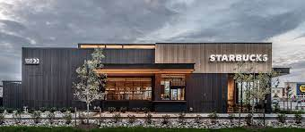
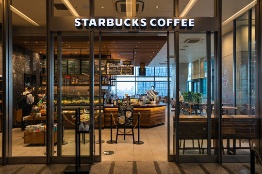

Chaohua (Kevin) Wang
I am Chaohua (Kevin) Wang. I am 28 years old, and my pronouns are he/his. Recently picking up college life in University of California Riverside (UCR). I am capable of speaking proficient English and Chinese and intermediate level Japanese, French, and Spanish.
I have been professionally trained as a barista for 2 years in the year of 2014, and had been working in the industry for 7 years. Personally I am a coffee "addict", apart from making coffee, I am also proficient in coffee tasting. I have been working in multiple different specialty coffee shop. I spent around 2 years in my local "Starbucks" and spent my other 5 years working in my own coffee shop called "Kevin's Coffee shop". From the two years of work in “Starbucks” I see a magnificent fusion between chain stores and coffee shops, such why are they success. With that knowledge I started my own café “Kevin’s Coffee Shop” in the year of 2018. I have attend the World barista Championship (WBC) in the year of 2022 and the year of 2023. The year of 2022 is my first time attending WBC, for which I did not have sufficient experience with the competition. With my experience in 2022, I performed much better in 2023 receiving the gorgeous result of being the top 6.
Apart from making coffee, I also work with coffee accessories design. I explore and see which type of filter, cup, and other accessories are best in the process of making coffee. I take intellectual property right of the K filter. This is a specialty pour over coffee filter that I designed, which could best maintain coffee bean’s oil during the brewing process and also help to reduce the acidity of coffee. I also designed the K brewer for which specialty brewing. To better understand the market, I took an economic degree for my undergraduate. My goal is that everyone would be able to produce their “cup of excellence” easily at home. I want more people to drink coffee for the experience, and not for the caffeine. With that said, I had companies working with “Delonghi” in goal to produce easy to understand but high quality coffee machine. Upon purchasing the machine, we also offer consumer a 3 day one hour each, barista training course. This is such we can give our customer a better chance to expose to coffee making, and to get engaged in the process of making coffee.
Experience
Teaching Assistant
• Ran sessions to help students learn basic economics
• Reviewed and graded student economic essays
• TA'd for over 200 students each academic quarter
Education
University of California Riverside
Wentworth College
Kristin School
Portfolio

